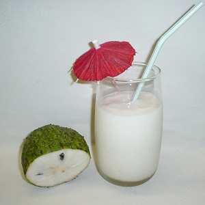

Soursop Juice
Soursop juice is a refreshing and tropical drink made from the pulp of the soursop fruit. It has a unique flavor that is both sweet and tangy, and it's packed with vitamins and antioxidants. Soursop juice is a popular beverage in many Caribbean countries.
Ingredients
- 1 ripe soursop fruit
- 4 cups water
- 1/4 cup sugar (adjust to taste)
- 1 tablespoon lime juice
- Ice cubes (optional)
Instructions
- Wash the soursop fruit and cut it in half.
- Scoop out the flesh and seeds from the fruit using a spoon.
- Place the soursop flesh in a blender.
- Add water to the blender and blend until smooth.
- Place a fine-mesh strainer over a pitcher and pour the blended mixture into the strainer.
- Use a spoon to press down on the pulp and extract as much juice as possible.
- Add sugar and lime juice to the pitcher and stir until the sugar is dissolved.
- Chill the juice in the refrigerator for at least 1 hour.
- Serve the soursop juice over ice cubes, if desired.